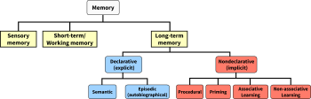
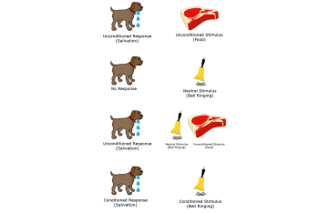

8.2: Types of Memory
Memory can be arranged in several broad categories based on the type of information stored (Figure 2). Two main types of long-term memory are declarative (explicit) and nondeclarative (implicit). Declarative memory involves consciously accessible information that you can “explicitly” declare and describe. Declarative memory can be divided into semantic memory (for facts) and episodic memory (for events). In contrast, nondeclarative memory (implicit) cannot be explicitly described or consciously accessed. It encompasses various forms of learning that alter behavior without requiring awareness, such as learning a new skill, conditioning, priming, and perceptual learning.

Declarative Memory (Explicit)
Declarative memories, also called explicit memories, are the pieces of information that can be consciously stated. Declarative memory can be subdivided into semantic memory and episodic memory. Semantic memories include memories for general knowledge about the world (e.g., concepts, facts), whereas episodic memories include memories of past personal experiences and events.
Semantic memories. Semantic memories reflect memories for general knowledge, facts, concepts, and information not directly linked to past personal experiences. Some examples of semantic memories include: 1. “Jupiter is the largest planet in our solar system.” 2. “Rosalind Franklin discovered the double helix structure of a DNA molecule.” 3. “The actor Keanu Reeves played the protagonist of the movie The Matrix.”.
Episodic memories. An episodic memory, sometimes called an autobiographical memory, is the recollection of a moment in a person’s life. It can be thought of as “mental time travel” or re-experiencing past personal events. The following are examples of episodic memories: “When I got home, I put my wallet and phone on the table.” “I ordered pizza last night.” “In 2019, I saw my favorite musicians perform live.”
One important class of episodic memories are emotional memories, largely because emotional memories are often remembered more strongly than neutral memories (LaBar & Phelps, 1998; Kensinger, 2009; Sharot et al., 2004). For example, people tend to strongly remember emotionally-charged events, including positive events such as a high school graduation, or negative events such as throwing up in front of everyone at a wedding. It may feel intuitive that emotional events are better remembered than neutral events, but how do emotions enhance our memory? Researchers have begun characterizing neurobiological systems in the brain that may explain how emotions contribute to the stabilization of memories (see sections on memory encoding and memory consolidation).
Nondeclarative Memory (Implicit)
The other main category of long-term memory is nondeclarative or implicit memory. Unlike declarative (explicit) memory, implicit memory is acquired and used unconsciously. It affects thoughts and behaviors and results from experience-based neural plasticity. Different types of implicit memory include procedural memory, priming, non-associative learning, and associative learning.
Procedural memories. Procedural memories are unconscious and involve “knowing how” to perform actions. Unlike explicit memories, these cannot be consciously accessed or verbally described. They encompass skills and sequences of motor actions that, with practice, become automatic. Examples include riding a bicycle or an experienced musician playing scales. Procedural memory is sometimes colloquially called “muscle memory”, even though the muscles do not store any actual memory!
Priming. Priming occurs when exposure to a stimulus implicitly shapes the response to a subsequent stimulus, without conscious or intentional learning. There are different types of priming, including perceptual priming and semantic priming. Perceptual priming occurs when perceptual properties (e.g., shape, sound, appearance) of a stimulus inform the response to a subsequent stimulus. For example, after seeing the word “WATER”, individuals are more likely to complete the fragment “W_ _ _ R” with “WATER”, rather than an alternative word like “WIDER”. Semantic priming occurs when exposure to a stimulus activates associations with related concepts in memory, thereby making related stimuli more accessible. Semantic priming is captured in word association tasks. For example, after discussing “apples”, individuals are more likely to mention related concepts like “fruit” or “red”, rather than unrelated concepts.
Non-Associative Learning. Non-associative learning, a form of implicit memory, does not require learned associations and instead involves a change in behavior in response to repeated exposure to a single type of stimulus. Non-associative memories emerge from habituation and sensitization. In habituation, responses decrease after repeated stimulus presentation as the individual learns that the stimulus lacks meaning. For example, if someone pokes you in the back, you will initially jump in surprise. However, if someone repeatedly pokes you in the back over and over again, you will habituate—your response will decrease and you realize that the stimulus is meaningless. In sensitization, repeated exposure to a stimulus can result in increased sensitivity, or stronger responsivity to the stimulus. For example, a person who moves to a new city may initially show little responsivity to the sound of car horns. However, with repeated exposure to the sound of car horns, the person may become sensitized to the noise and exhibit a stronger response (e.g., startle).
Associative Learning. Associative learning, another form of implicit memory, involves learning associations between unrelated items and results in associative memories. One way we create associative memories is through traditional Pavlovian conditioning. For example, recall the classic experiment conducted by Ivan Pavlov in the late 1800s (Figure 3). Normally, the presentation of dog food, an unconditioned stimulus (US), causes a dog to salivate naturally, an unconditioned response (UR). Dogs are not particularly interested in the sound of a bell: this neutral stimulus will produce a minor response, such as a head turn and attentional shift toward the sound source, but not much more. However, when this stimulus is paired repeatedly with the presentation of food, dogs quickly learn to associate that the bell signals food. After multiple pairings, upon hearing the bell (a conditioned stimulus, CS), the dogs begin to salivate (a conditioned response, CR), independent of any food. Associative learning can also be measured with instrumental conditioning where a rodent, for example, learns to associate a response with a meaningful stimulus. For example, a rodent will learn to press a lever to access food.

Working Memory
Compared to long-term memory, working memory has limited duration and capacity. Related to short-term memory, working memory has been described as the use of attention to manage short-term memory, or as the system that temporarily holds and manipulates information in short-term memory (Cowan, 2008). Working memory is necessary for complex cognitive tasks such as learning, reasoning, having a conversation or argument, and doing mental arithmetic.
Short-term memory is often tested using a forward digit-span task, where participants immediately repeat a list of numbers they hear. Working memory, which involves holding and manipulating information, is often tested with a backward digit-span task. In this test, participants hear a series of numbers and must repeat them in reverse order. Digit-span tests begin with short sequences and progressively increase in length until the participant can no longer correctly repeat or reverse the sequence. Performance on the backward digit-span correlates with fluid intelligence, reflecting its demand on cognitive resources (Cowan, 2008).
Text Attributions
Parts of this section were adapted from:
Hedges, V. (2022). Memory Systems. In Introduction to Neuroscience. CC BY-NC-SA 4.0 https://openbooks.lib.msu.edu/introneuroscience1/chapter/memory-systems/
Lim, A., & Graykowski, D. (2021). Learning and Memory. In Open Neuroscience Initiative. https://static1.squarespace.com/static/56555dbee4b0f0c1a002808a/t/60537c185d98a2151537dbba/1616084000764/Open+Neuroscience+Initiative+-+Chapter+13+-+Learning+and+Memory.pdf
Spielman, R. M., Jenkins, W. J., & Lovett, M. D. (2020). Psychology 2e. OpenStax. Access for free at https://openstax.org/books/psychology-2e/pages/1-1-what-is-psychology
Stangor, C. (2014). Introduction to Psychology – 1st Canadian Edition. https://opentextbc.ca/introductiontopsychology/chapter/8-1-memories-as-types-and-stages/ CC BY-NC-SA 4.0
Media Attributions
- Types of Memory is licensed under a CC BY-NC-SA (Attribution NonCommercial ShareAlike) license
- Classical conditioning © Salehi.s via Wikipedia adapted by Valerie Hedges is licensed under a CC BY-SA (Attribution ShareAlike) license


Memory that involves remembering events and facts. Also called explicit memory.
Memory for information that does not require conscious learning. Includes procedural memory, priming, non-associative learning, and associative learning.
Memory of factual information
Memory of an autobiographical event (e.g., personal experience)
Type of unconscious memory that allows for remembering procedures and performance of specific tasks
The presentation of one stimulus influences the response to a subsequent stimulus
Changes in behavior in response to repeated exposure to a stimulus
Decrease in response after repeated presentation of a stimulus
Increased responsivity after repeated exposure to the same stimulus
Association of a stimulus with a cue such as with classical Pavlovian conditioning or instrumental conditioning